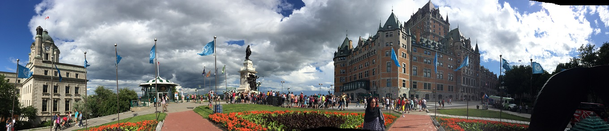
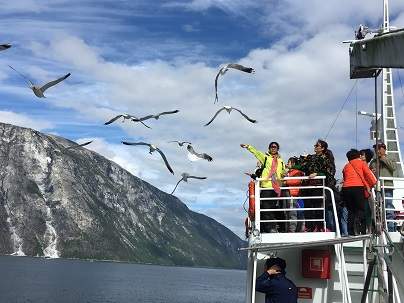
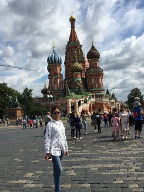
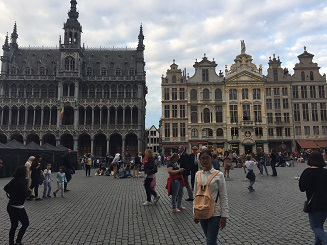

Finland
西贝柳斯公园

Québec
全城分新区老区两部分。新市区高楼林立，商业繁荣，一派现代化城市风貌。
旧市区仍保有18世纪时法国城市的风貌，这里挂有18世纪牌匾的店铺商行比比皆是
是北美最古老的城市，北美洲历史文化名城，名胜古迹甚多，
为墨西哥以北唯一留有古老城墙的美洲城市，被联合国教科文组织评为世界级的古迹保存地。
该地不仅语言属法语系，其日常生活，鹅卵石街道，法式建筑，石造教堂等，均展现着中世纪欧洲风格。
America
国会大厦
Finland
西贝柳斯公园

Canada
尼亚加拉瀑布

norway
挪威峡湾

Russia
圣瓦西里升天大教堂

Beigium
布鲁塞尔大广场